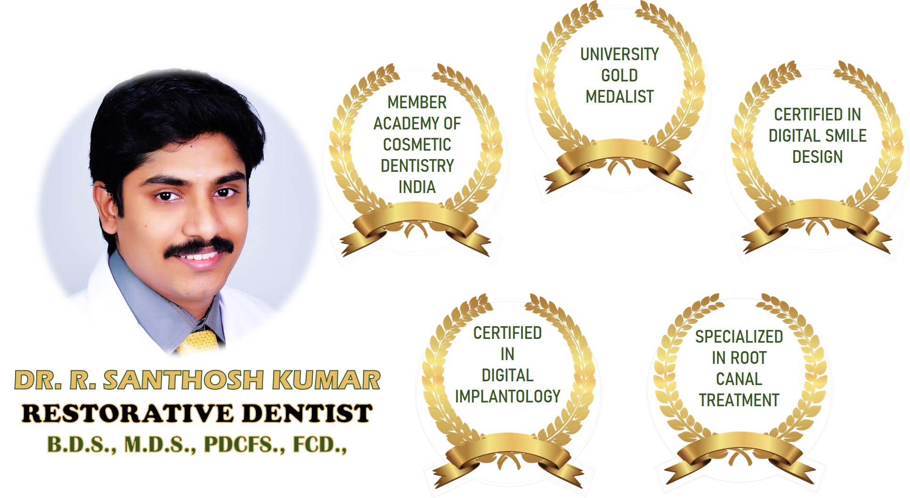
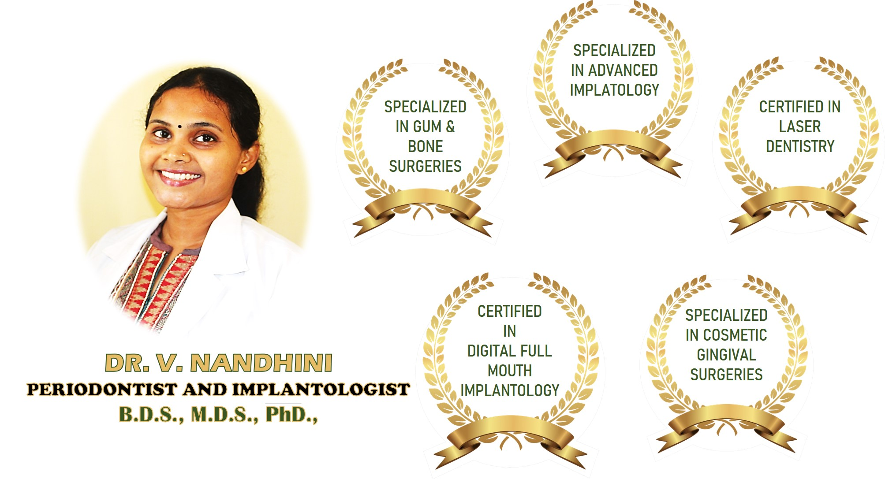

Dr. Santosh Kumar
Dr. Santhosh Kumar R is a Dentist in Kodambakkam, Chennai and has an experience of 16 years in this field. Dr. Santhosh Kumar R practices at R.D.Dental Care in Kodambakkam, Chennai,GV Dental Care in Perambur, Chennai and Sparky's Dental Clinic in Velachery, Chennai.
He completed BDS from Thai Moogambigai Dental College Hospital in 2007 and MDS from Ragas Dental College Hospital in 2015.
Some of the services provided by the doctor are: Cosmetic/ Aesthetic Dentistry,Impaction / Impacted Tooth Extraction,Artificial Teeth,Conservative Dentistry and Crowns and Bridges Fixing etc.

Dr. Nandhini
Dr. Nandhini V is a Dentist from Chennai, India. She is licenced from Tamil Nadu, India and has been practicing for 6 Years.
As far as education concerns, She has done MDS (GOLD MEDALIST) from tamilnadu dr mgr medical university, class of 2015. She has worked as Dental Surgeon and Implantologist at RD Dental care from 2008 to till date. She has been awarded with University Gold Medalist. She has done certification in Mds oral medicine and maxillofacial radiology.
Dental Surgeon and Implantologist at RD Dental care from 2008 to till date.